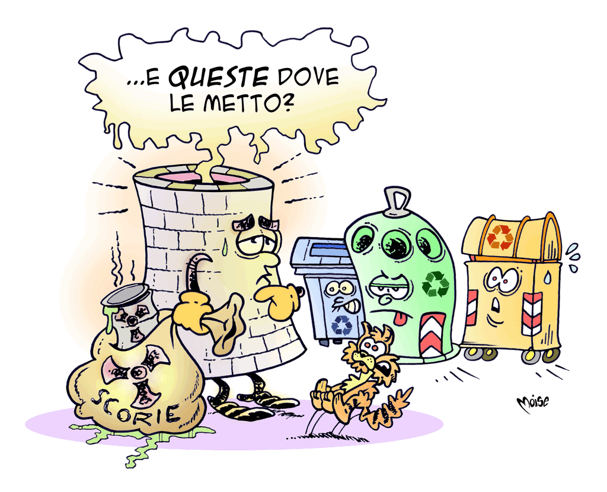

Energia nucleare
L'atomo, particella elementare della materia, è costituito da un nucleo, formato da protoni e neutroni e circondato da una nube di elettroni. Ogni trasformazione del nucleo, fusione (quando si uniscono due nuclei) o fissione (quando un nucleo si divide in nuclei più piccoli), rilascia una elevata quantità di energia.
Lo sfruttamento dell'energia nucleare consiste in una fissione controllata in grado di utilizzare l'energia termica rilasciata dalla separazione degli atomi – in genere di uranio o plutonio – per produrre energia elettrica.
L'energia nucleare non si basa sulla combustione di materie prime fossili e non produce gas serra, ma comporta altri problemi. I prodotti della reazione, le scorie, sono infatti radioattivi e pericolosi per gli esseri viventi. Il periodo di decadimento radioattivo può durare da centinaia a migliaia di anni: le scorie devono quindi essere opportunamente stoccate e schermate in modo da evitare la fuoriuscita di radioattività nell'ambiente esterno.
Inoltre, ogni reattore nucleare deve essere progettato, realizzato e manutenuto in modo da garantire altissimi standard di sicurezza per tutelare la comunità e prevenire incidenti. Ricordiamo i più gravi: il disastro di Fukushima, in Giappone nel 2011, fu causato da una serie di incidenti con quattro distinte esplosioni, indotte dal terremoto e dallo tsunami; a Chernobyl, in Ucraina nel 1986, si verificò il maggiore disastro nucleare della storia. Una esplosione, causata principalmente da errori umani, provocò lo scoperchiamento del reattore nucleare e un incendio. Si sprigionò una nube di materiale radioattivo che rese necessaria l'evacuazione di 336.000 persone nell'area della centrale e raggiunse, con livelli di contaminazione via via minori, l'Europa orientale, la Germania, l'Austria, l'Italia, la Francia, fino a toccare le coste orientali del Nord America.
